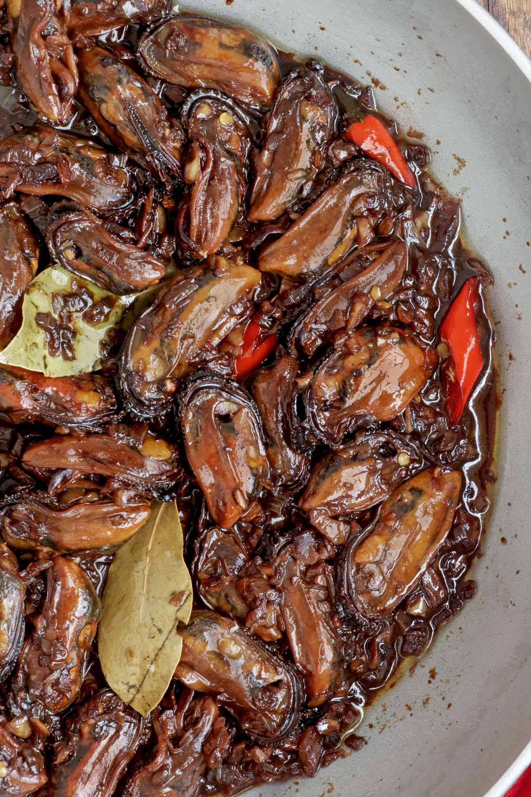

Spicy Adobong Tahong

Adobo is so versatile and delicious that numerous variations of the recipe have been made.
And since we love the iconic Filipino Adobo, I am also trying to make as much variety as I can. So far,
I have made Pork Adobo (Adobong Baboy), Chicken Adobo (Adobong Manok), Chicken Liver Adobo (Adobong Atay ng Manok),
Adobong Pusit, and Adobong Puti.
Ingredients
- 4 pounds fresh mussels
- 1 teaspoon rock salt
- Water for soaking
- 1 thumb ginger cut into slices
- 1 cup water for steaming
- 3 tablespoons oil
- 1 medium yellow onion finely chopped
- ½ head garlic minced
- ¼ cup vinegar
- ¼ cup soy sauce
- 2 pieces bay leaves
- ¼ teaspoon peppercorn crushed
- 1 teaspoon brown sugar optional
- 2 pieces chili labuyo each cut into 4
- 1-2 tablespoon butter
Steps
- 4 pounds fresh mussels,1 teaspoon rock salt,Water. Place fresh mussels in a bowl. Sprinkle salt over the mussels, then pour enough water to cover. Let it stand for 20 minutes.
- 1 thumb ginger,1 cup water. Place the mussels in a wok or deep pan. Pour 1 cup of water and add the ginger. Cover with lid and turn on the heat to medium. Cook until the mussels open up.
- Remove the pan from heat and let them cool down enough to handle. Reserve the liquid. Take a pair of a shell and use this to pinch and pull the meat out of the shells. You can also use tongs. Remove the “beard" from the mussels, if any. Set aside
- 3 tablespoons oil,1 medium yellow onion,½ head garlic. Heat oil in a wok or pan over medium heat. Saute onion and garlic until lightly browned and aromatic.
- ¼ cup vinegar,¼ cup soy sauce,2 pieces bay leaves,¼ teaspoon peppercorn. Add vinegar, soy sauce, ¼ cup of the reserved broth, bay leaves, and peppercorn. Let it simmer for 5 minutes without stirring.
- 1 teaspoon brown sugar,1-2 tablespoon butter,2 pieces chili labuyo. Stir in the cooked mussels, brown sugar, butter, and chili. Cook for another 5 minutes or until the sauce has thickened.
- Turn the heat off and transfer to a serving dish.